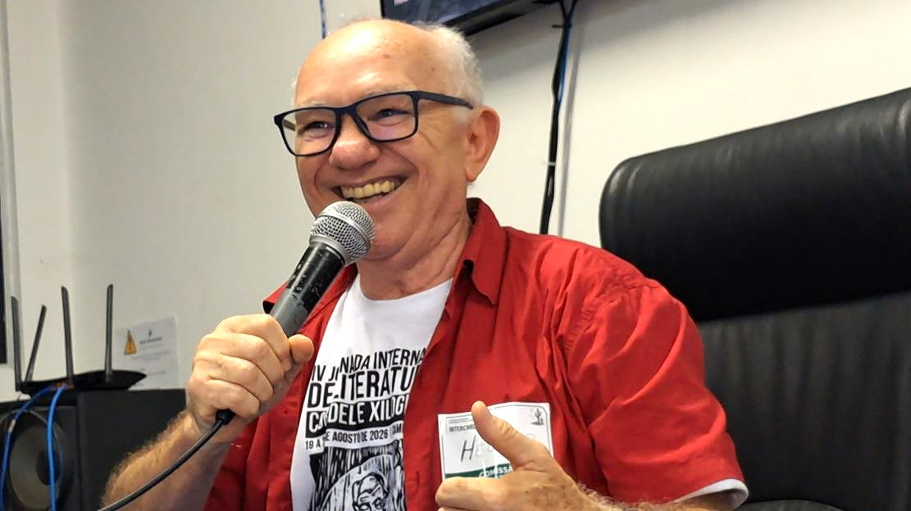
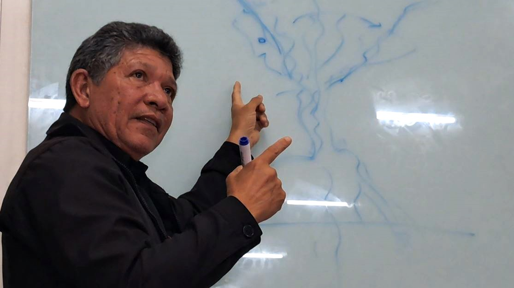
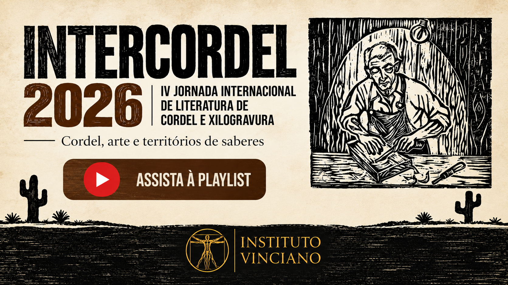

Durante três dias, Campina Grande tornou-se ponto de encontro de pesquisadores, poetas, cordelistas, xilogravuristas, professores e estudantes dedicados a duas manifestações profundamente ligadas à cultura popular nordestina. Realizada de 19 a 21 de agosto, na Universidade Federal de Campina Grande (UFCG), a IV Jornada Internacional de Literatura de Cordel e Xilogravura reuniu conferências, mesas-redondas, grupos de trabalho, minicursos, oficinas e atividades de circulação da produção artística.
A realização da Jornada na Paraíba deu continuidade a um percurso iniciado fora do Brasil. Segundo o professor Hélder Pinheiro, da UFCG e coordenador do encontro em Campina Grande, a primeira edição ocorreu em Lisboa, seguida por Serra Talhada, em Pernambuco, e Fortaleza, no Ceará. Em Campina Grande, o evento ganhou dois grupos de trabalho destinados à apresentação de pesquisas, além de conferências, mesas-redondas, minicursos, oficinas e espaço para circulação dos folhetos produzidos pelos participantes.
A escolha de Campina Grande para sediar a quarta edição também se relaciona à trajetória da cidade como centro de divulgação da literatura popular. A apresentação oficial do evento recorda nomes como Manuel Camilo dos Santos, Manuel Monteiro, Antônio Lucena, Toin da Mulatinha e Maria Godelivie, além da presença contemporânea de poetas e poetisas em atividade, entre elas as Marias do Cordel.

O vínculo aparece também no ambiente acadêmico. O Programa de Pós-Graduação em Linguagem e Ensino da UFCG (PPGLE/UFCG), apoiador da Jornada, é apresentado pela organização como o único programa de pós-graduação que possui uma disciplina denominada Literatura de Cordel, além de reunir pesquisas voltadas para essa área da cultura.
A pesquisadora Joseilda [SOBRENOME A CONFERIR], que iniciou sua trajetória acadêmica na própria UFCG, recordou as Jornadas Internacionais de Poéticas da Oralidade, criadas em Campina Grande em 2012, e destacou a importância do encontro entre pesquisadores e detentores dos saberes e fazeres das tradições orais.
Entre a universidade e a cultura popular

A presença do cordel e da xilogravura no ambiente universitário atravessou os três dias de programação. A vice-reitora da UFCG, professora Fernanda Leal, ressaltou a importância dessas manifestações para aproximar a universidade da sociedade e abrir espaço acadêmico para expressões vinculadas à cultura popular.
O professor José Mário da Silva, da UFCG e membro das academias de Letras de Campina Grande e Paraibana de Letras, chamou atenção para outra dimensão dessa aproximação. Em sua avaliação, literatura erudita e literatura popular não devem ser colocadas em planos hierárquicos diferentes. São manifestações distintas, mas capazes de compartilhar dimensões estéticas e humanas.
visão geral da Jornada / auditório / mesa.
Essa diversidade também apareceu nos próprios objetos de pesquisa apresentados durante a Jornada. O cordel foi discutido não apenas como patrimônio cultural ou gênero literário, mas como produção que acompanha transformações da sociedade e incorpora novos sujeitos, temas e formas de representação.
Fábio Mário da Silva, professor da Universidade Federal Rural de Pernambuco (UFRPE), participou da própria trajetória de formação da Jornada, iniciada em Lisboa. Em Campina Grande, apresentou uma discussão sobre a presença de temas LGBTQIA+ na literatura de cordel, incluindo tanto discursos de apoio quanto representações homofóbicas. Para o pesquisador, cordel e xilogravura constituem também um mapa das diferentes identidades nordestinas e de suas transformações.
A representação da população negra foi abordada pelo jornalista e pesquisador Alberto Perdigão. Ele recuperou uma tradição de representações racistas presentes historicamente nos folhetos para discutir mudanças ocorridas nas últimas décadas. Em sua análise, o cordel contemporâneo passou também a servir como espaço para temas relacionados à negritude que durante muito tempo tiveram pouca presença na grande mídia e até no livro didático, incluindo escravidão, racismo, personagens e heróis negros.
As mulheres e as transformações de sua presença no cordel constituíram outro eixo do encontro. O GT Vozes Femininas da Literatura de Cordel Contemporânea, coordenado por Verônica Sobral e Adriana Vicente, recebeu 18 trabalhos dedicados à contribuição e às diferentes vozes femininas nesse campo.
Entre essas discussões estava a pesquisa apresentada pela professora Socorro Pinheiro, da Universidade Estadual do Ceará (UECE), sobre autoria feminina e temática erótica. Seu trabalho parte da constatação de que as mulheres produzem cordéis sobre uma variedade de assuntos que inclui também o erotismo, ampliando os temas e perspectivas encontrados na produção contemporânea.
Outras abordagens ampliaram ainda mais esse quadro, incluindo pesquisas sobre a representação dos povos da floresta e de outros grupos sociais. Stélio Torquato Lima observou uma transformação especialmente a partir dos anos 1990: grupos tradicionalmente representados de maneira estereotipada passaram progressivamente da condição de objetos da representação para sujeitos de fala dentro da própria produção em cordel.
Cordel que ensina ciência, preserva histórias e fala do presente

A dimensão educacional teve espaço próprio na programação da Jornada. O GT 1, “Literatura de cordel e ensino: vivências e propostas”, foi dedicado a pesquisas, experiências e sugestões de trabalho com folhetos de cordel no contexto escolar, tanto no Ensino Básico quanto no Ensino Superior.
A proposta do grupo de trabalho parte do reconhecimento crescente da literatura de cordel em documentos oficiais, como a Base Nacional Comum Curricular (BNCC) e propostas curriculares dos estados, ao mesmo tempo em que aponta a necessidade de maior divulgação das experiências de leitura e de utilização dos folhetos efetivamente realizadas em sala de aula.
Entre as experiências apresentadas durante o encontro, José Nildo Lima, o J. Lima Cordelista, falou sobre o projeto Cordel Pedagógico nas aulas de ciência, desenvolvido na Universidade Estadual da Paraíba (UEPB). A iniciativa reúne estudantes de diferentes áreas e leva às escolas oficinas de criação e declamação, além de trabalhos produzidos a partir do diálogo entre poesia e conhecimento científico.
Uma das experiências surgidas dessa trajetória é As aventuras de Siba e Pitelin, Multiverso da Física e Outros Cordéis, conjunto de 13 cordéis que aborda conteúdos como sistemas de medidas, leis de Newton, energia elétrica, ondas e óptica. Para José Nildo, a participação em encontros como a Jornada também permite aproximar extensão universitária, produção artística e pesquisa acadêmica.
A diversidade temática pôde ser observada também entre autores que levaram sua produção para Campina Grande. Do Piauí, Maria [NOME COMPLETO A CONFERIR] apresentou trabalhos relacionados a mulheres, patrimônio e educação ambiental. Entre seus temas aparecem a trajetória da arqueóloga Niède Guidon, a preservação dos rios piauienses e a defesa do Cajueiro-Rei, utilizando o cordel como instrumento de conscientização sobre a proteção do meio ambiente.
Em outra fala, a cordelista, que completa 25 anos desde a publicação de seu primeiro folheto, descreveu seu processo de criação como uma maneira de “ficcionar dentro do real”, combinando personagens históricos, poesia, memória e elementos da cultura do Piauí.
A professora Andréa de Lima Andrade, da UFRPE, trouxe outra possibilidade de leitura ao aproximar literatura de cordel e “escritas de si”. Participante da Jornada desde sua segunda edição, a pesquisadora apresentou em Campina Grande uma abordagem que utiliza estudos autobiográficos para explorar novos caminhos de investigação da literatura de cordel.
Xilogravura para além do folheto

Embora historicamente associada às capas da literatura de cordel, a xilogravura apareceu na Jornada também como linguagem artística com trajetória e possibilidades próprias.
O artista Josafá de Orós chamou atenção justamente para essa autonomia ao discutir a xilogravura não apenas como ilustração associada ao cordel, mas como produção inserida no campo das artes visuais. Sua participação incluiu ainda a apresentação de trabalhos em que a técnica foi aplicada a outros suportes e produtos.
A prática da xilogravura também integrou a programação. Em uma oficina realizada durante o encontro, os participantes acompanharam diferentes etapas do processo, da preparação das matrizes à impressão das imagens. O responsável pela atividade [NOME A CONFERIR] participou ainda de mesa-redonda dedicada à xilogravura e apresentou trabalhos nos quais histórias relacionadas ao cangaço foram transformadas em cordéis.
A presença da xilogravura como produção autônoma reforçou uma característica observada ao longo da Jornada: embora cordel e xilogravura compartilhem uma extensa história de aproximações, ambos constituem campos capazes de estabelecer relações próprias com a literatura, as artes visuais, a educação e a memória.
cordelistas, livros, feira ou circulação de publicações.
Memória e novos projetos

A conferência de abertura apresentou uma iniciativa que leva algumas dessas questões para além dos três dias de programação. A professora Francisca Pereira dos Santos [IDENTIFICAÇÃO A CONFERIR], da Universidade Federal do Cariri (UFCA), apresentou a recém-criada Escola Brasileira de Literatura de Cordel e Xilogravura, lançada em 30 de junho de 2026.
A iniciativa reúne diferentes frentes de atuação e começa por uma questão fundamental: a memória. Entre seus primeiros trabalhos está o tratamento técnico de acervos existentes na UFCA para disponibilização à pesquisa, incluindo coleções relacionadas à literatura de cordel e à autoria feminina.
A Escola prevê ainda publicação de folhetos, oficinas, cantoria, xilogravura, ações de economia criativa e um censo nacional envolvendo diferentes segmentos. Segundo a pesquisadora, o projeto pretende também reativar “territórios de memória”, incluindo bibliotecas, museus, escolas e outros espaços que mantêm acervos ainda pouco explorados.
A proposta dialoga com uma Jornada em que a preservação da tradição apareceu acompanhada pela produção de novos conhecimentos. O encontro reuniu pessoas que pesquisam manifestações históricas, mas também artistas que continuam produzindo, pesquisadores que reavaliam representações sociais e educadores que experimentam novas utilizações do cordel.
Entre escrita e oralidade

No encerramento da programação, Aderaldo Luciano apresentou a conferência “O Juazeiro Poético Nordestino” [TÍTULO EXATO A CONFERIR]. A imagem do juazeiro serviu para reunir diferentes formas da criação nordestina e relacionar a história da escrita às tradições da oralidade. Em sua fala, o pesquisador destacou a presença, na Jornada, de participantes provenientes de diferentes estados do Nordeste e situou essas produções dentro de uma construção cultural compartilhada.
Entre a conferência de abertura e o encerramento, os três dias realizados em Campina Grande mostraram um campo que preserva vínculos profundos com a tradição sem permanecer limitado a ela. Mulheres, população negra, povos tradicionais, diversidade sexual, educação, ciência, meio ambiente e memória apareceram entre os temas encontrados nas pesquisas e produções apresentadas.
Ao receber a quarta edição da Jornada, Campina Grande passou a integrar um percurso iniciado em Lisboa e continuado em diferentes cidades do Nordeste. Mais do que reunir estudos sobre cordel e xilogravura, o encontro colocou lado a lado quem pesquisa, quem ensina e quem continua produzindo essas manifestações.
Durante três dias, universidade e cultura popular não estiveram em lados diferentes de uma fronteira: encontraram-se no mesmo espaço, entre folhetos, matrizes, pesquisas, oficinas, imagens e versos.
Assista à cobertura
A cobertura audiovisual da IV Jornada Internacional de Literatura de Cordel e Xilogravura foi realizada pelo Vincine, núcleo audiovisual do Instituto Vinciano de Artes e Ciências. A playlist reúne depoimentos, entrevistas e registros produzidos durante o evento.
